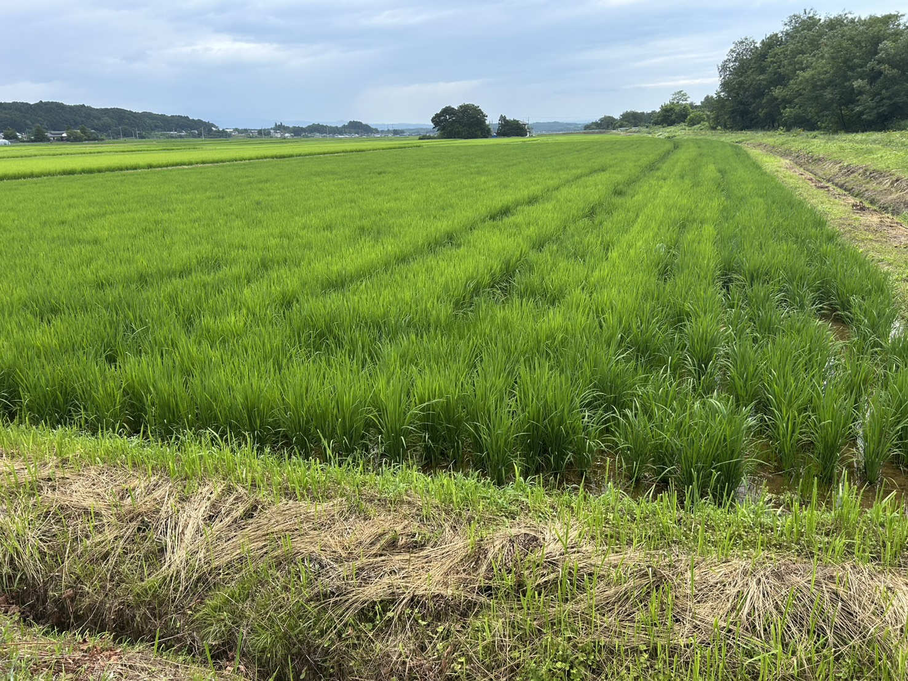
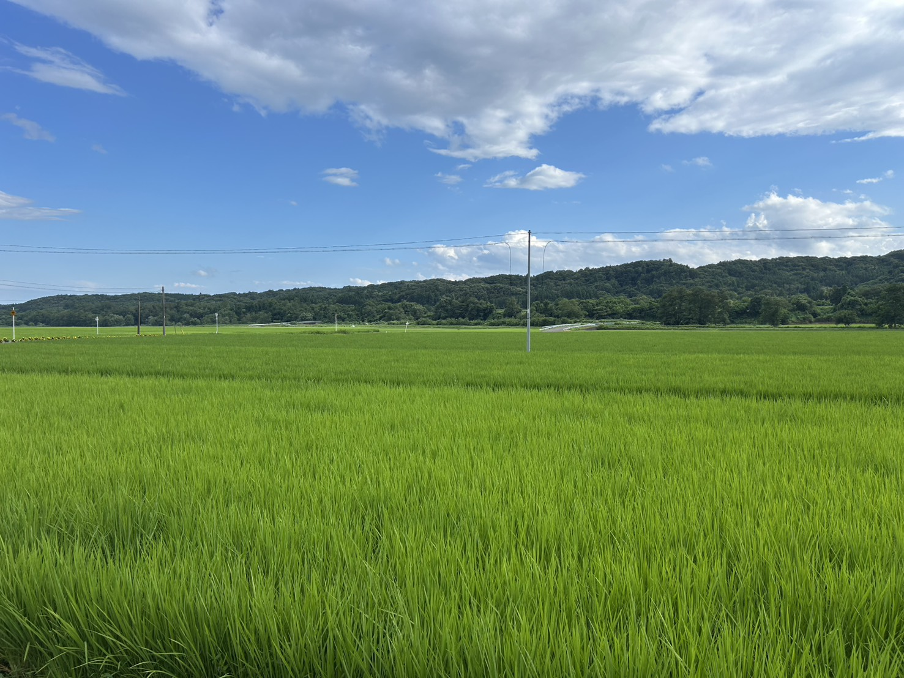
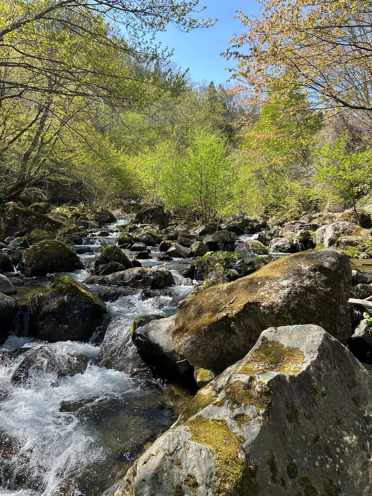

SOFT FARM / 01
SAKAMAI
ソフトファームが育てる酒米のご紹介です。
ABOUT

ソフトファームの酒米は、日本酒「廣戸川」をはじめ、ご縁のある蔵元へと届けられます。
酒造好適米「福の香」は、砕けやすく、繊細な米。その一粒一粒に、土の力、水の力、そして人の手が宿ります。
地域の風土と対話しながら、先人たちが受け継いできた米づくりの知恵に、私たちの農法と経験を重ね合わせる。それが、ソフトファームの酒米づくりです。


福島県天栄村
01 / TANBO
標高六百メートル、山脈の伏流水が流れ込むこの土地は、昼夜の寒暖差が大きく、酒米づくりに適した稀有な環境です。
田んぼ一枚ごとに土壌の成分を分析し、最適な施肥計画を立てます。ドローンによる生育診断、センサーによる水位管理——それらはすべて、「米が一番気持ちよく育つ環境」を科学的に整えるための手段です。
機械に任せるのではなく、機械の目を借りて、人の手でととのえる。それが私たちの流儀です。
酒造好適米「福の香」
02 / VARIETY
「福の香」は、地域に根付いた酒造好適米です。ソフトファームでは生育環境に応じた栽培管理で品質を高めています。
生育管理
03 / ICT
田んぼと向き合ううえで、私たちが大切にしているのは「勘と経験」と「データ」の両立です。先人たちの手仕事に宿る繊細さは、そのまま残したい。けれど、見えないものを見えるようにしてくれる新しい道具の力も、同じように信じています。
三次元測量で田面を正確に均し、GNSSで水管理の精度を上げる。ドローンで稲の色を読み取り、病害の兆しを早期に察知する。長年の経験と、データが導く答え。その両方を大切にしています。
伝統は、守るだけでは続かない。新しい道具を受け入れながら、変えてはいけないものを見極める。それが、私たちの米づくりです。
BREWERY
日本酒「廣戸川」
私たちソフトファームが丹精込めて育てた酒米「福の香」は、同じ天栄村の蔵元・松崎酒造へと渡ります。そこで醸されるのが、日本酒「廣戸川」です。
清らかな伏流水と、昼夜の寒暖差。その土地のちからを宿した米だからこそ生まれる、澄んだ味わい。米づくりから酒づくりへ——ひとつづきの流れのなかに、私たちの田んぼがあることを、静かに誇りに思っています。
蔵元の理想と、私たちの米。そのあいだを結ぶのは、同じ水、同じ風、そして同じ土です。
ANNUAL FLOW